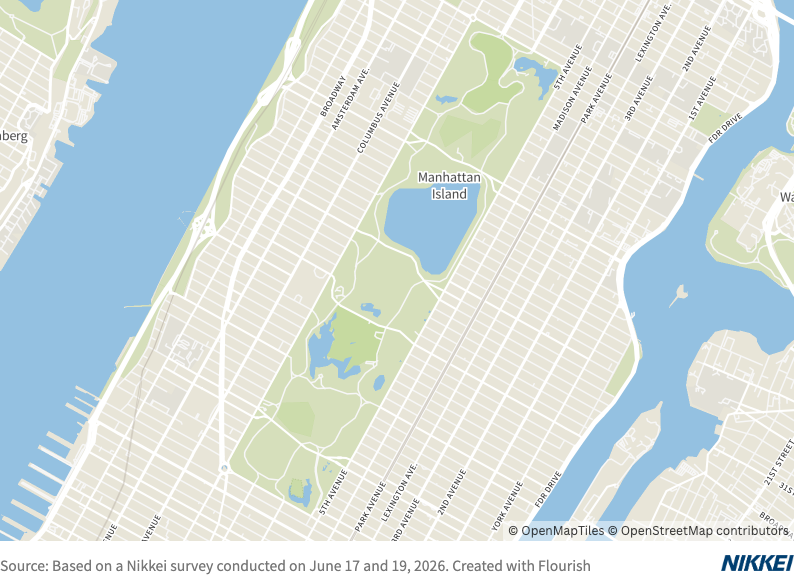

74% of Food Trucks Don’t Display Prices
A Hotbed for Price Gouging, or a Result of Rising Prices?
“Prices change every day, you know. I just answered prices because you asked.”
In mid-June, in Central Park, Manhattan, New York. When I asked a man at a food truck selling chicken over rice and hot dogs why he didn’t display prices, he replied like this. He said the chicken over rice was $12 and the hot dogs were $6.
I also asked a man at another food truck that sold more than ten kinds of smoothies without displaying prices. Pointing to a bottle containing ingredients, he replied, “Take this, for example—the price changes.” All of the smoothies are priced at $12.

When you walk around Manhattan, you see food trucks everywhere. Although they display photos of their items, many do not list prices. Perhaps they’re doing this intentionally so they can quickly adjust prices in response to recent inflation. But doesn’t this create a breeding ground for price gouging?
New York City has a law requiring businesses to display prices. What is the actual situation?
On June 17 and 19, the Nikkei visually surveyed a total of 85 food trucks in and around Central Park, one of New York’s top tourist destinations.

As a result, 63 of the 85 carts—74 percent—had their prices hidden. The items for sale included a variety of products, such as hamburgers, ice cream, and beverages. The lack of price displays was particularly noticeable in the southern part of Central Park, which attracts many tourists. The 22 carts that did display prices were operated by vendors and other businesses operating within the park.
In fact, the negative effects of not displaying prices are already evident. In 2015, NBC New York reported on a vendor selling hot dogs to tourists for an inflated price of $30, which sparked controversy.

Unlike tourist spots that attract many first-time visitors, places with a large number of regulars were found to display prices. For example, food trucks in front of Hunter College of the City University of New York and Columbia University had menus with prices posted.
When the Nikkei surveyed the price of chicken rice bars in Manhattan, the highest price was $15, with a price range of at least 1.5 times that amount.
There is no doubt that displaying prices is more consumer-friendly. To ensure that New York maintains its reputation as one of the world’s leading tourist destinations, it is essential to adopt a consumer-oriented approach.